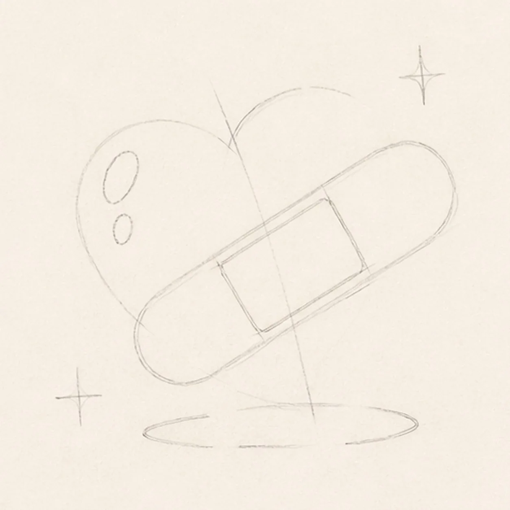
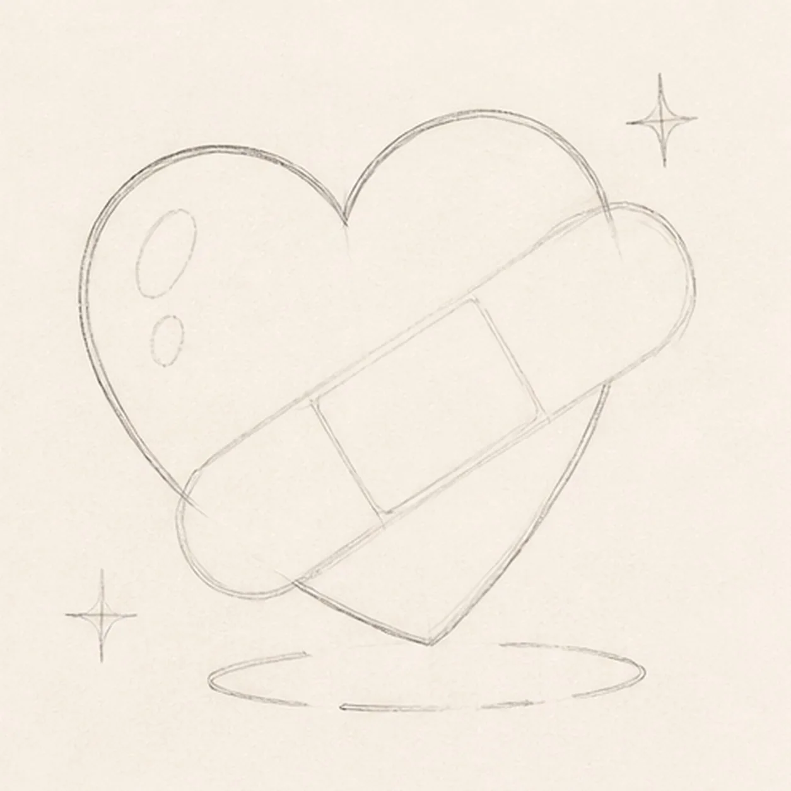
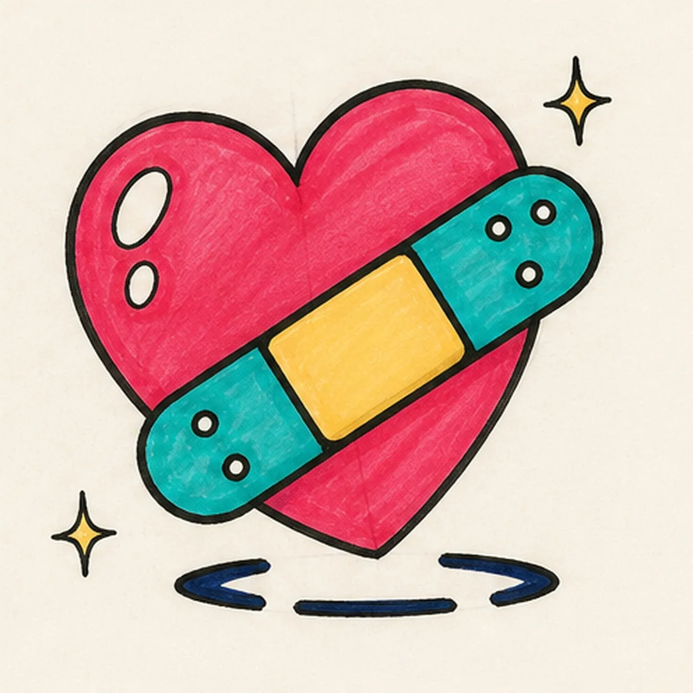

Felt-tip marker mode
Let's draw a heart with a bandage
Treat this as one playful practice round: sketch the idea loosely, simplify the shapes, then commit with confident marker outlines and bright fills.
-
01

Map the heart and bandage
Use pale pencil to place the slightly tilted heart envelope and center axis, the complete diagonal bandage footprint, one center-pad box, two heart-highlight reserves, two sparkle centers, and one broken shadow footprint.
Marker tip: Ghost both heart lobes before touching down, then lay a straight diagonal axis across the center. Reserve the entire bandage now so later heart lines and color can stop around it instead of becoming marks you must erase.
-
02

Shape the plump heart
Wrap the pale guide with one loose face-free heart contour while preserving the empty diagonal bandage, highlight, sparkle, and shadow reserves.
Marker tip: Rotate the page to pull each lobe in one confident arc, and let one lobe sit slightly higher than the other. Keep the point soft rather than pinched, then compare the open paper on both sides of the bandage route.
-
03
Build the bandage overlap
Add one diagonal bandage with a central pad, two rounded ends, exactly four ventilation dots total, two open-paper heart highlights, exactly two sparkle accents, and the broken shadow contour.
Marker tip: Draw the two long bandage edges parallel first, then cap both ends with half circles. Count two ventilation dots on each end, and stop the heart's interior marks at the bandage boundary so the overlap stays physically clean.
-
04
Ink the caring contours
Trace only the established heart, bandage, center pad, four dots, two highlights, two sparkles, and broken shadow with thick, slightly wobbly black felt-tip.
Marker tip: Ink the small dots and pad first, let them dry, then rotate the page for the long heart and bandage curves. Give the outside silhouettes more weight than the dot and highlight rings so the doodle remains readable at thumbnail size.
-
05

Fill the hopeful color
Fill the established heart with raspberry and coral, both bandage ends with teal, the center pad with warm yellow, and the broken shadow with deep navy while preserving both open-paper highlights and visible marker streaks.
Marker tip: Pull marker strokes with each form: around the heart lobes, along the bandage, and across the center pad. Let neighboring colors dry before they touch, and color around every dot and highlight instead of painting over the reserved paper.
-
06
![Handmade face-free felt-tip marker drawing of one plump raspberry-and-coral heart tilted slightly clockwise with one teal adhesive bandage crossing diagonally from lower left to upper right, one warm-yellow center pad, two rounded adhesive ends with exactly four open-paper ventilation dots total, two open-paper oval heart highlights, exactly two small warm-yellow sparkle accents, thick imperfect black outlines, visible marker streaks, a few pale construction traces, and one broken deep-navy shadow](../assets/heart-with-a-bandage-finished-v1.webp)
Patch up the finish
Strengthen selected established black contours, even the same marker fills, clarify the two paper highlights and two sparkles, and deepen only the existing broken shadow.
Marker tip: Count one heart, one bandage, one center pad, four ventilation dots, two highlights, two sparkles, and one shadow before stopping. Try different care-and-repair colors in your own version, but keep the clean diagonal overlap and handmade marker grain.